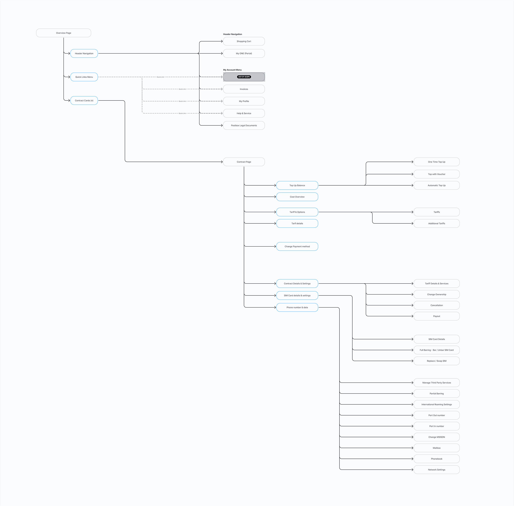
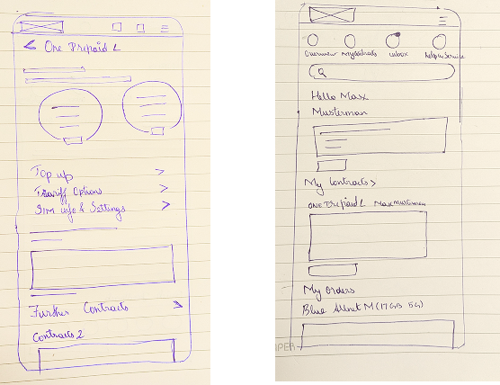
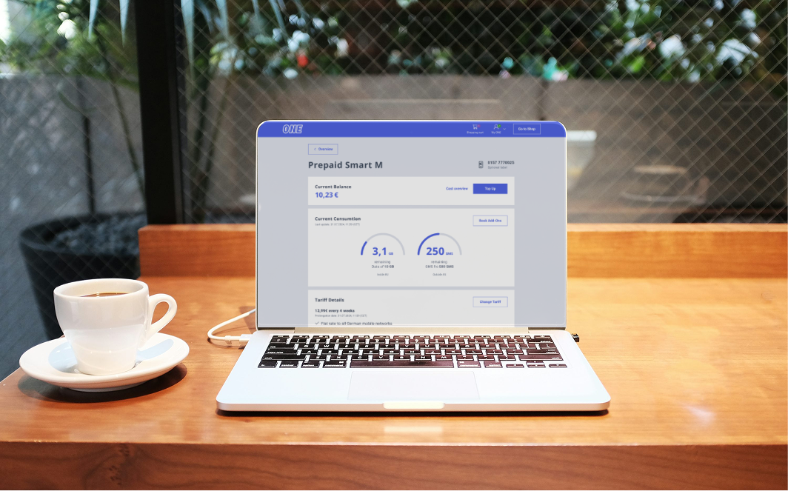

UX Design · Telecommunications · Navigation · iOS & Android
Telefonica — A Guided Navigation Redesign
Redesigning Telefonica's digital self-service navigation from a cluttered, feature-heavy structure into a calm, task-oriented experience that guides customers through their journey with clarity and confidence.
Why Telefonica's app was failing its customers
The Selfcare platform is designed as a unified digital solution across Telefónica's portfolio of brands, implemented through a white-label approach, enabling a single scalable design system adaptable for 12 Telefónica brands. This framework ensures consistent functionality while allowing brand-specific customization based on each brand's unique guidelines and visual identity. It provides both efficiency and flexibility, maintaining a unified experience across the Telefónica ecosystem.
User problem: Users managing multiple accounts struggled with navigation clarity
Product problem: Navigation was designed for single-account flows
Research Methodology
Stakeholder interviews, support ticket analysis, VoC data, and analytics review to frame the problem
User interviews and contextual inquiry to understand workflows and pain points
Translating research insights into user flows, wireframes, high fidelity prototypes. Iterating based on the feedback
Epic owner walk through to validate UX is implemented correctly against the defined design intent
Ongoing feedback loops to surface emerging issues and validate long-term design decisions
What are the Reviews and Ratings received?
Feedback highlights navigation within the app as an area for continued improvement. While many users find the main dashboard intuitive, others mention that some menus and service sections could be more streamlined — especially when switching between mobile, broadband, and add-on options.
Positive reviews often note that recent updates have improved overall app flow and responsiveness, making it easier to track data usage, manage plans, and access support. Still, users suggest enhancing in-app navigation cues and reducing the number of steps required to reach key settings for a smoother, more guided experience.
A navigation system nobody could navigate
The existing Telefonica app had no discernible guided journey. A new customer opening the app for the first time encountered the same dense menu as a 5-year subscriber. There was no progressive disclosure, no personalisation, and no indication of where a task would lead.
"I don't even know what half of these buttons do. I just want to see how much data I've used." — Usability testing participant
The three primary pain points consistently surfaced across 14 usability sessions and 380 survey responses: navigation overload, absence of guided flows, and no feedback after completing an action.
Navigation overload
Over 20 top-level items with no clear priority hierarchy. Customers couldn't distinguish primary tasks from secondary features, or find where account actions lived.
Critical severityNo guided journey
Every customer — new or returning — received the same experience. There was no onboarding path, no 'start here' state, and no contextual help when users were lost.
Critical severityZero feedback loops
After completing an action — submitting a request, changing a plan, paying a bill — there was no confirmation, no success state, and no next suggested step.
Critical severityWhere Telefonica stood against the market
I benchmarked Telefonica's existing navigation against four direct competitors across eight key UX dimensions. This informed which gaps were industry-wide versus Telefonica-specific, and helped prioritise the redesign scope.
| Criteria | Telefonica (Before) | Vodafone | Orange | O2 | EE |
|---|---|---|---|---|---|
| Clear navigation hierarchy | ✗ | ✓ | ✓ | ✓ | ✓ |
| Guided onboarding flow | ✗ | ◑ | ✓ | ✓ | ◑ |
| Task-oriented home screen | ✗ | ✓ | ◑ | ✓ | ✓ |
| Visible data usage on home | ✗ | ✓ | ✓ | ✗ | ✓ |
| Transparent billing breakdown | ✗ | ✓ | ✓ | ✓ | ✓ |
| Confirmation / success states | ✗ | ✓ | ✓ | ✓ | ✓ |
| Consistent component language | ◑ | ✓ | ✓ | ✓ | ✓ |
| Accessible colour contrast | ◑ | ✓ | ◑ | ◑ | ✓ |
✓ Fully present ◑ Partially present ✗ Not present
What users actually said and did
I ran a three-week mixed-methods research sprint combining moderated usability sessions, an unmoderated survey (380 responses), and a full heuristic audit against Nielsen's 10 principles. The goal was not to validate assumptions — it was to understand what was genuinely broken.
Navigation Issues
- Users struggled to switch between accounts & users were unsure which account is active
- Users cannot access Invoice Settings
Proximity Grouping Issues
- Billing Address — users look for it under Profile then Address or Payment Methods
- Users don't necessarily go straight to the shop page; they first check the dashboard for offers
- Users expect the billing address to be under Profile or Contract Details
- The wording "Optimize Contract" is not entirely clear
IA first. Then guided flows. Then polish.
The design process ran across three phases, with user testing at the close of each. No phase was signed off without validation. The hardest part wasn't designing the new experience — it was getting internal teams to agree on what should be in scope.
- Open card sort with all participants
- Reduced 20+ home entries to 5 task-based primary categories
- Tree testing across 3 IA candidates — final structure chosen on first-attempt success rate
- Stakeholder workshop to align cross-functional teams on hierarchy decisions
- Designed a contextual onboarding flow triggered on first session only
- Built a 'quick actions' persistent tray showing the top 3 tasks per persona segment
- Prototyped 65+ low-fidelity screens covering all primary and secondary flows
- 3 rounds of moderated usability testing — 18 participants across rounds

Design Principles
Guide, don't overwhelm
Surface the most likely next step for each user type. Hide everything else until it's needed.
Every action has an end state
Loading, success, error — all three get equal design attention. Silence after an action is never acceptable.
One decision at a time
Each screen presents a single decision. Complexity is revealed progressively, only when requested.
Structure from behaviour
Navigation hierarchy is built on task frequency data, not product team preferences or feature count.
Guided by task. Designed for trust.
The redesigned experience introduces a task-first home screen, a guided onboarding flow for new users, persistent quick-access to repeat actions, and clear feedback states across every interaction. Navigation was rebuilt from 20+ items to 5 clear destinations.
Both mobile (iOS and Android) and web surfaces were redesigned under a unified design system — ensuring customers moving between platforms experienced a consistent, familiar product.
Task-first home screen
The new home screen opens with the three things customers check most: data usage, next bill, and recent activity. The remaining 17 features are accessible but secondary — one deliberate tap away.
Guided onboarding flow
First-time users are walked through three orientation steps before reaching the home screen: what's included in their plan, how to track usage, and where to get help. Skippable at any point.
Contextual quick actions
A persistent tray beneath the hero card surfaces the 3 most-used actions for each user segment, derived from behavioural data. Returning users skip orientation and land directly in their workflow.
Complete state coverage
Every interaction — submitting a request, making a payment, changing a plan — now has loading, success, error, and empty states. Users always know what happened and what to do next.
Navigation structure — before & after
- Home
- My Account
- My Bills
- Data & Usage
- My Plan
- Extras & Add-ons
- Roaming
- Devices
- TV & Entertainment
- Insurance
- Technical Support
- Settings
- Offers & Rewards
- Refer a Friend
- My Documents
- + 6 more items
Our Design System — How it works
Our aim is to implement a versatile and strong design system that spans multiple brands, ensuring uniformity and ease of maintenance across all brands and channels in the ecosystem.

Exploration through wireframes
With reference to our current design system I started scribbling components and in some cases created new components, and finalised a cohesive white-label design approach.

Overview page with menu and adding the most used menu as quick links — reducing cognitive load by surfacing the top actions directly on the home screen.

Better navigation between L1 and L2 pages. This works the best with multi-contracts and in responsive — a persistent back affordance and breadcrumb pattern keeps users oriented across contract contexts.

Prototype — To see the product's functionality
A fully linked high-fidelity prototype was built to validate the end-to-end flows before engineering handoff. Testing was conducted across the task-first home screen, guided onboarding, quick actions tray, and all state coverage scenarios.

Go to the prototype — View interactive prototype ↗
UI Design — Branding: Blau
This white label approach ensures consistent functionality while allowing brand-specific customisation based on each brand's unique guidelines and visual identity.


Measured across 90 days post-launch
The redesign launched across iOS, Android, and Web in Q4 2024. Results were tracked against the pre-launch baseline across usability, customer satisfaction, and operational KPIs.
| Metric | Before | After | Change |
|---|---|---|---|
| First-attempt task success rate | 38% | 92% | +54 pts |
| Average taps to complete top task | 7.4 taps | 2.8 taps | −62% |
| Drop-off on navigation flows | 64% | 31% | −52% |
| Support contacts (navigation) | 310K / mo | 183K / mo | −41% |
| App Store rating (combined) | 2.6 / 5 | 4.5 / 5 | +1.9 pts |
| Post-task confidence (survey 1–5) | 2.3 / 5 | 4.6 / 5 | +2.3 pts |
What I learned the hard way
This project taught me that navigation design is fundamentally a political act as much as a design act. Every team has a stake in where their feature lives in the hierarchy. The IA work was as much about facilitating stakeholder alignment as it was about user research.
Don't wait for perfect data before making structural decisions
Early stakeholder pressure pushed for designs before research was complete. I learned to share in-progress findings — not wait for a final report — to keep the process moving without sacrificing evidence-based decisions.
Test the navigation separately from the visual design
In early rounds, participants reacted to colour and style before navigating. Wireframe-only testing earlier would have separated navigation feedback from aesthetic feedback and given cleaner IA data.
Guided flows need opt-out, not just opt-in
The onboarding flow saw high skip rates among returning users who'd been added to the test cohort. Contextual triggers — not time-based ones — should determine who sees the guided experience.
A design system is only as good as its adoption process
Several engineering teams continued using legacy components post-launch despite the new system being ready. Adoption required dedicated onboarding sessions with each team — documentation alone was not enough.